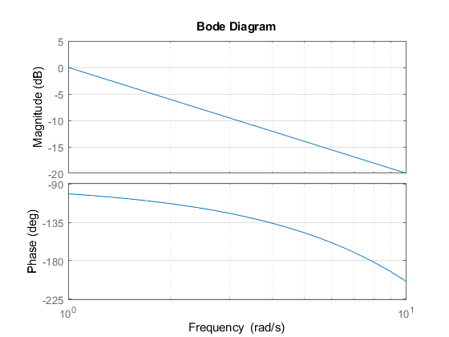
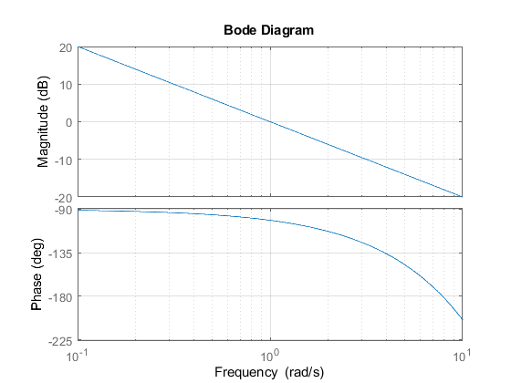
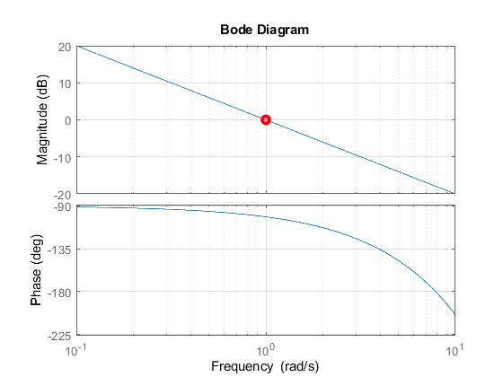
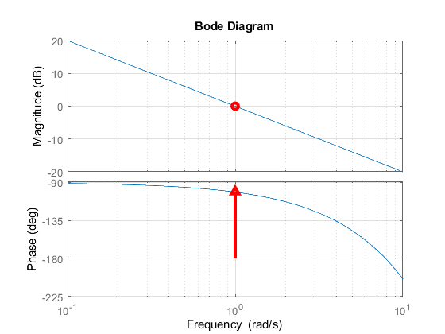
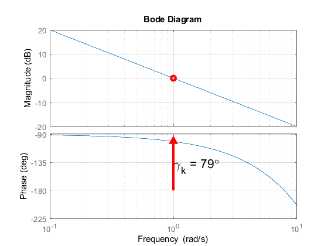
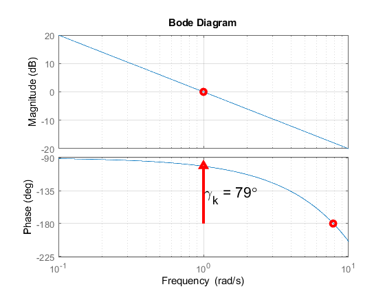
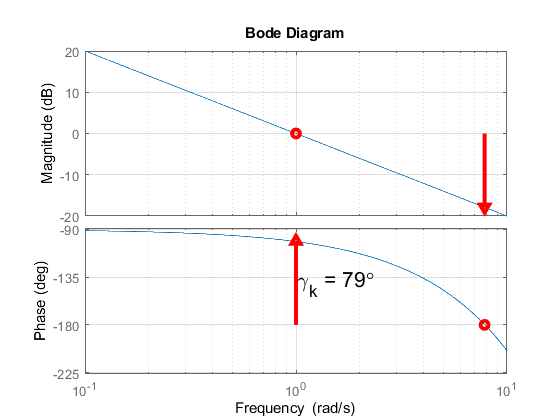
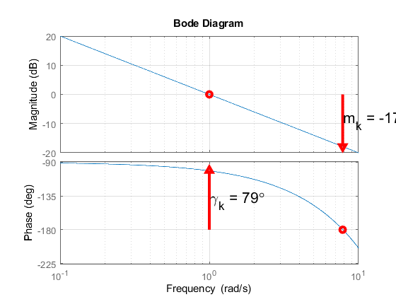
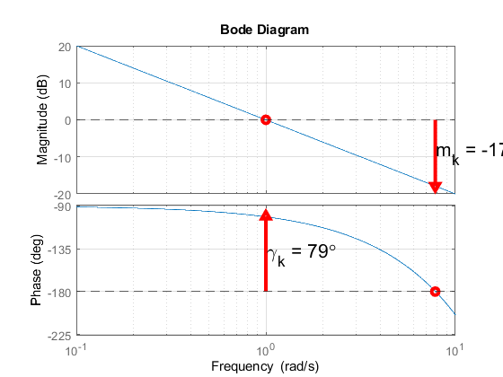

Contents
- declaring the open-loop TF
- plot the OL bode diagram
- the cuto ff freq. is the freq. where the magnitude is 0dB
- Now you can read and stroe the value of the cut off frequency
- place a dot in the cut off freq.
- the last command is not working
- drawing the phase margin
- place a text near a phase margin PM(gamma_k)
- now we can read w_pi from the phase characteristics
- place a point on the w_pi
- drawing the gain margin
- place a text near the gain margin GM(m_k)
- drawing horizontal lines at 0 magnitude and -180 degrees on the bode
- checking for stability:
declaring the open-loop TF
Hol = tf(1, [1 0], 'IOdelay', 0.2)
Hol =
1
exp(-0.2*s) * -
s
Continuous-time transfer function.
plot the OL bode diagram
bode(Hol); grid; shg;
the cuto ff freq. is the freq. where the magnitude is 0dB
bode(Hol, logspace(-1,1,500)); grid; shg; hold
Current plot held
Now you can read and stroe the value of the cut off frequency
wc = 1;
place a dot in the cut off freq.
semilogx(wc,0,'ro', LineWidth=3)
the last command is not working
set the active plot the one with the magnitude characteristic
handles = findobj(gcf, 'Type', 'axes'); axes(handles(2)) semilogx(wc,0,'ro', LineWidth=3)
drawing the phase margin
switch to phase characteristic plot
axes(handles(1)) % read from the bode the phase at wc pwc = -101; gamma_k = (180 + pwc); % the phase margin % place an arrow in (wc,pwc) semilogx(wc, pwc,'r^', LineWidth=3); % drawing a straight line for the phase margin semilogx([wc wc], [-180 pwc],'r-', LineWidth= 3);
place a text near a phase margin PM(gamma_k)
in order to make visible the value of the PM
text(wc*1.01,pwc-gamma_k/2, "\gamma_k = " + num2str(gamma_k) + "\circ", 'FontSize', 16)
now we can read w_pi from the phase characteristics
w_pi = 7.83;
place a point on the w_pi
semilogx(w_pi,-180,'ro', LineWidth=3)
 drawing the gain margin
%switching to the magnitude characteristics plot axes(handles(2)); %read the magnitude at w_pi m_k = -17.9; % place an arrow in (w_pi, m_k) semilogx(w_pi,m_k,'rv', LineWidth=3); % drawing a straight line for the magnitude margin semilogx([w_pi w_pi], [m_k 0],'r-', LineWidth= 3);
place a text near the gain margin GM(m_k)
in order to make visible the value of the GM
text(w_pi*1.01, m_k/2, "m_k = " + num2str(m_k) + "dB", 'FontSize', 16);
drawing horizontal lines at 0 magnitude and -180 degrees on the bode
diagrams for better represent the obvious:
yline(0,'--'); axes(handles(1)); yline(-180, '--');
checking for stability:
if (m_k < 0) && (gamma_k) > 0 msg = "The system is closed loop stable."; else msg = "The system is NOT closed loop stable."; end disp(msg)
The system is closed loop stable.